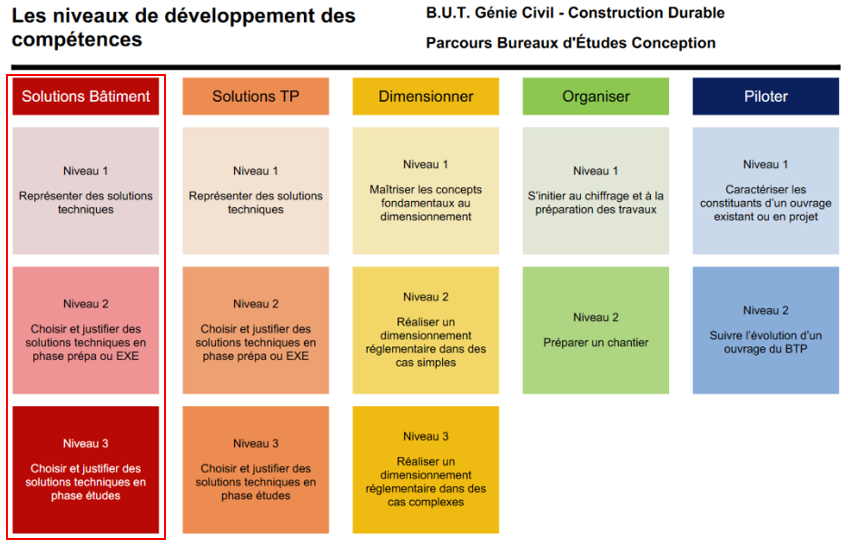

Niveaux de compétences dans le domaine des travaux bâtiments
Le projet de l'ERP de Saint-Exupéry consiste en la construction d'un bâtiment d'enseignement supérieur, pour le groupe scolaire Antoine de Saint-Exupéry.
Le bâtiment réalisé est un R+3 en enveloppe béton regroupant des salles d'enseignement, amphitéatres, bureaux administratifs, une cafétéria et divers locaux techniques.
Le rez-de-chausséeprésente une façade en béton matricée. Le premier étage est habillé de murs-rideau et est entouré de jardinières.
Les deux derniers étages, eux, reçoivent une isolation par l'extérieur, sous bardage metallique.
Dans le cadre d'une situation d'apprentissage évaluée, mon binôme et moi-même avons réalisés un ensemble de plans de sécurité incendie,
ainsi qu'un synoptique de façade et détail sur les jardinière du R+1
Le projet Legay consiste en un projet fictif de construction d'une maison neuve, à un étage.
Cette demeure à la particularité de se constitué de murs à ossatures bois.
Dans le cadre de cette situation d'apprentissage évaluée, avec mon binôme, nous avons réalisé des plans de coffrage du plancher haut du rez-de-chaussée,
afin de présenté d'une part la solution d'un solivage visible supportant des panneaux OSB, et d'autre part une solution de plancher CLT.
Il a donc dallut prédimensionner les éléments de solivage et les panneaux du plancher afin d'en définir un calepinage.
Enfin, nous avons réalisés des plans d'exécution pour quelques murs à ossatures bois, ainsi que des coupes de détails explicitants les liaisons et la continuité de l'enveloppe.
Le projet Querina consiste en l'aménagement d'un immeuble d'habitation, pour accueillir un double cabinet de kinésithérapeutes.
Ce nouvel aménagement nécessite une reconceptualisation du sous-sol, afin d'acceuillir 5 nouvelles places, dont 1 place PMR.
Dans le cadre de cette situation d'apprentissage évaluée, avec mon binôme, nous avons retraivailler l'aménagement des espaces,
en prennant en compte la nécessaire accessibilité des personnes à mobilité réduite et leur sécurité.
De surcroit, nous avons conceptualisé de nouveau le parking en sous-sol, dans le respect des réglementations et normes en vigueur.
Nous avons réaliser aussi le dimensionnement du réseau de poutres en sous-sol, en cohérence avec nos descentes de charges,
et d'une semelle isolée et d'une semlle filante.
Enfin, nous avons réalisé un plan des réseaux enterrés permettant la récupération des eaux usées du sous-sol,
ainsi que la séparation des hydrocarbures.